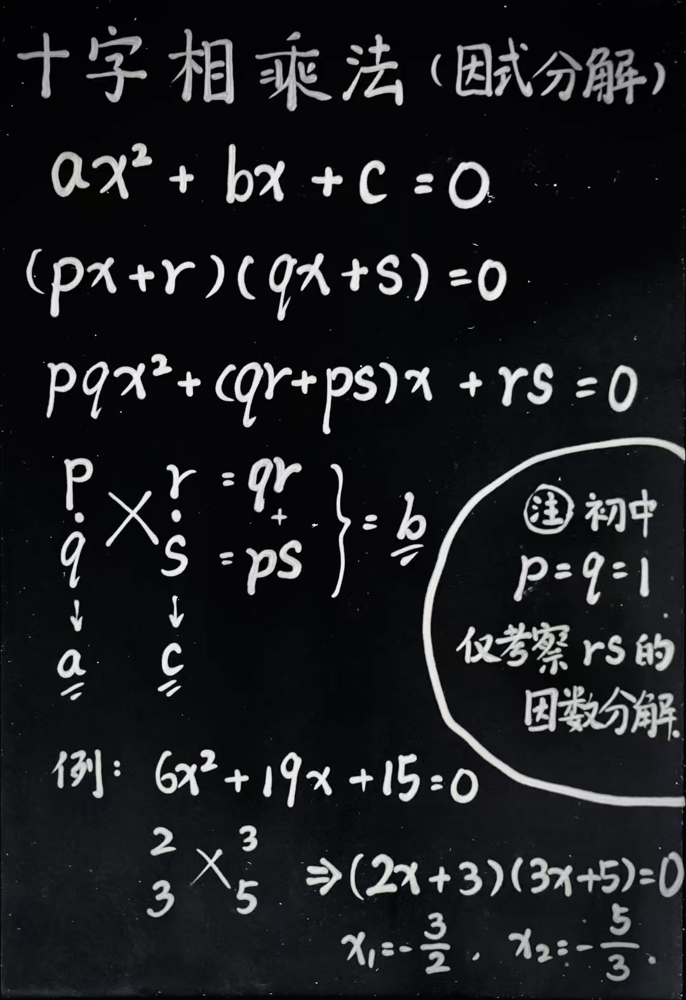

初中数学
初中数学第一章 有理数1.1 正数和负数1.2 有理数1.3 有理数的加减法1.4 有理数的乘除法1.5 有理数的乘方第二章 整式的加减2.1 整式2.2 整式的加减第三章 一元一次方程3.1 从算式到方程3.2 解一元一次方程（一）—— 合并同类项与移项3.3 解一元一次方程（二）—— 去括号与去分母3.4 实际问题与一元一次方程第四章 几何图形初步4.1 几何图形4.2 直线、射线、线段4.3 角第五章 相交线与平行线5.1 相交线5.2 平行线及其判定5.3 平行线的性质5.4 平移第六章 实数6.1 平方根6.2 立方根6.3 实数第七章 平面直角坐标系7.1 平面直角坐标系7.2 坐标方法的简单应用第八章 二元一次方程组8.1 二元一次方程组8.2 消元 —— 解二元一次方程组8.3 实际问题与二元一次方程组8.4 三元一次方程组的解法第九章 不等式与不等式组9.1 不等式9.2 一元一次不等式9.3 一元一次不等式组第十章 数据的收集、整理与描述10.1 统计调查10.2 直方图第十一章 三角形11.1 与三角形有关的线段11.2 与三角形有关的角11.3 多边形及其内角和第十二章 全等三角形12.1 全等三角形12.2 三角形全等的判定12.3 角的平分线的性质第十三章 轴对称13.1 轴对称13.2 画轴对称图形13.3 等腰三角形13.4 课题学习 最短路径问题第十四章 整式的乘法与因式分解14.1 整式的乘法14.2 乘法公式14.3 因式分解第十五章 分式15.1 分式15.2 分式的运算15.3 分式方程第十六章 二次根式16.1 二次根式16.2 二次根式的乘除16.3 二次根式的加减第十七章 勾股定理17.1 勾股定理17.2 勾股定理的逆定理第十八章 平行四边形18.1 平行四边形18.2 特殊的平行四边形第十九章 一次函数19.1 函数19.2 一次函数第二十章 数据的分析20.1 数据的集中趋势20.2 数据的波动程度第二十一章 一元二次方程21.1 一元二次方程21.2 解一元二次方程21.3 实际问题与一元二次方程第二十二章 二次函数22.1 二次函数的图象和性质22.2 二次函数与一元二次方程22.3 实际问题与二次函数第二十三章 旋转23.1 图形的旋转23.2 中心对称第二十四章 圆24.1 圆的有关性质24.2 点和圆、直线和圆的位置关系24.3 正多边形和圆24.4 弧长和扇形面积第二十五章 概率初步25.1 随机事件与概率25.2 用列举法求概率25.3 用频率估计概率第二十六章 反比例函数26.1 反比例函数26.2 实际问题与反比例函数第二十七章 相似27.1 图形的相似27.2 相似三角形27.3 位似第二十八章 锐角三角函数28.1 锐角三角函数28.2 解直角三角形及其应用第二十九章 投影与视图29.1 投影29.2 三视图29.3 课题学习 制作立体模型
第一章 有理数
1.1 正数和负数
正数：大于0的数。正号省略。
负数：小于0的数。标记负号。
0：既不是正数，也不是负数。
意义：无、不存在、正负边界。
正负：表示相反的意义，标准可以自定义。
1.2 有理数
整数：正整数，0，负整数。
分数：正分数，负分数。
有理数：有道理（规律）可循的数。（整数，有限小数，无限循环小数）
无理数：无道理（规律）可循的数。（
自然数：大于0的整数。（自然界中存在的数量抽象）
数轴：一条上面标数的轴。（直线、正方向、原点0、单位长度）
相反数：符号不同、数值相同的两个数，互为相反数。
绝对值：长度、距离。（绝对即不变，相对即根据参照物不同结论会有不同）
标记符号：
比较大小：数轴右边的比左边的大，绝对值就比到原点的距离。
1.3 有理数的加减法
减法：小的数减大的数，结果一定是负数，再算个绝对值就行了。
减去一个数，等于加这个数的相反数：
减去一个正数，相等于往回捯。
加一个负数，加相当于向前进，但是负数改反了方向，最后也是往回捯。
减负数，加正数，方向，同理。
除法可以通过引入分数统统转换为乘法。
减法可以通过引入负数统统转换为加法。
乘法最终可统一为多次加法。
1.4 有理数的乘除法
负负得正：负数代表取反，而正负只有两个方向，取两次反相当于没变。
拆括号的时候，不要忘记变号。
1.5 有理数的乘方
乘方：自己乘自己，乘几次就叫几次方，其中2次方还叫平方，3次方还叫立方。
标记符号：
幂：乘方的结果。（杨幂名字的来源）
其中，
负数的奇次幂还是负数，偶次幂变成正数。（因为负负得正，成对出现就抵消了）
科学记数法：科学计算中会用到超大的数字，为了便于记录和比较大小（数量级），在记数的时候，只取第一位有效数字，后面的位数全部放到小数点以后，最后用乘以
第二章 整式的加减
2.1 整式
单项式：“粘”在一块的项式。
系数：单项式中（字母以外的）数字的乘积（注意化到最简）。
系数都是常数，一般写在最前，像“牵着”（系着）后面的字母项式一样。
多项式：用加减号组合连接的一堆单项式。
整式：单项式和多项式。
分式：带分号的表达式。
常数项：多项式中的单独常数部分。
2.2 整式的加减
同类项：有相同的“根儿”（字母）的项。
合并同类项：提取公因式。
提负号的时候，括号里不要忘记变号。
第三章 一元一次方程
3.1 从算式到方程
方程：含有未知数的等式。
元：未知数。
次：未知数的最高次数。
a元b次方程：含有a个未知数，且未知数的最高次数为b次的方程。
解（根）：使方程成立的未知数的取值。
等式的性质：左右加减同样的量，或放缩同样的倍数，等式仍成立。
启发：利用这个性质，可以凑完全平方公式。
3.2 解一元一次方程（一）—— 合并同类项与移项
移项：将项从等式的一边移到另一边。移项要变号！
3.3 解一元一次方程（二）—— 去括号与去分母
去分母：分式方程，交叉相乘。
注意：分子不写括号，但是意义上是一个整体，相当于自带括号，一定要整体相乘。
3.4 实际问题与一元一次方程
解题思路：翻译题干，找等量关系。
注意：有的时候不会直接告诉你“谁和谁相等”，而是有隐藏的等量关系（“总共花了……”）。
设未知数：
带比例的，按比例关系设未知数。（最后解出
谁比谁多，设数量小的，加成另一个。
找思路时，如果一个未知数不够，就设两个。
两个不够就设三个……往往最后都能消掉。
最忌讳的就是原地不动没有任何进展地思考该设谁做未知数。
第四章 几何图形初步
4.1 几何图形
立体图形：都可以理解成底面积和高的组合。
平面图形：只有长宽没有高。
4.2 直线、射线、线段
直线：两点确定一条直线，且两端可以无限延伸。
射线：只有一端可以无限延伸。
线段：两点的连线，长度确定。
两点之间，线段最短。（应用：最短路径问题，“将军饮马问题”）
4.3 角
角：一个点，射出两条边，形成角度。
标记符号：
角的分类：
直角=90°，锐角<90°，钝角>90°。
平角=180°，周角=360°。
角平分线：从角的顶点出发，平分角度的射线。
（角平分线的定义，也是角平分线的判定）
余角：照90°剩余的部分。
补角：照180°要补的部分。
第五章 相交线与平行线
5.1 相交线
邻补角：相邻、互补成180°的角。
对顶角：相对、互相顶着的角。
公理：不证自明，各学科领域中那些“认同就一起玩儿，不认同就滚蛋”的基本原则。
定理：基于公理的逻辑推导，形成的一系列比较好用的二级、三级结论。
性质：是什么
对顶角相等：首先是对顶角，一旦我知道他俩是对顶角，我就知道他俩相等。
判定：能干什么
图形的两组对边分别平行则判定该图形是平行四边形：
首先我知道这个图形能满足两组对边分别平行，然后我立刻就知道它是平行四边形。
性质与判定，常用于在读题的过程中迅速反应隐藏条件。
对顶角的性质：对顶角相等。
（证明：同角的补角相等）
垂线：垂直线。标记符号：
垂足：落脚点。标记符号： 。
垂线段的性质1（垂线段唯一性定理）：过一点只能做一条已知直线的垂线段。
（证明：略，感兴趣问 DeepSeek）
垂线段的性质2：垂线段最短。
（证明：略，感兴趣问 DeepSeek）
点到直线的距离：垂线段的长度。
距离在数学上一般指最短距离，与后期“角平分线上的点到角两边的距离相等”呼应。
同位角：一组平行线，被直线切割，处于直线和平行线同侧位置的两个角。
（精确的同位角定义是不限制平行的，这里的同位角实际上是一种特殊的平行同位角）
内错角：一组平行线，被直线切割，处于平行线内部交错的两个角。
同旁内角：一组平行线，被直线切割，处于直线同侧，互为旁侧，平行线内部的两个角。
5.2 平行线及其判定
平行：不相交的两条直线平行。
平行线唯一性公理：过直线外一点，有且只有一条直线与之平行。
直线平移平行定理：平行于同一直线的两条直线平行。
平行线的判定1：同位角相等，两直线平行。
平行线的判定2：内错角相等，两直线平行。
平行线的判定3：同旁内角互补，两直线平行。
三个判定，本质同一，可灵活转换。
5.3 平行线的性质
平行线的性质1：两直线平行，同位角相等。
平行线的性质2：两直线平行，内错角相等。
平行线的性质3：两直线平行，同旁内角互补。
三个性质，本质同一，可灵活转换。
命题：下判断、下结论。
真命题：判断成立。
假命题：判断不成立。
证明：基于一些命题（已知条件、前提条件），通过严密的逻辑推导，形成新的真命题（定理、结论）的过程。
（基于假命题进行的反证法，本质上也是一种证明，更好的说法是证伪）
5.4 平移
平移：不局限于平面，也可以在空间中，平是直线轨迹的意思，即不弯曲（平移不是漂移）。
思维方法：从反面想问题，想要认识一个东西是什么，如果正面理解不了，就尝试思考一下它不是什么。
抽象：基于多个个体抽出像的部分（共同点）。“你绝没有吃过水果”。
具象：一个个拥有自身特质内容的个体。
第六章 实数
6.1 平方根
乘方根：一个数乘
特殊的，2次方根也叫平方根，3次方根也叫立方根。
标记符号：
算术平方根（主根）：一个数的平方根一般有两个，取正的那个作为主根（没必要取负的当主根），同时规定0的主根就是0。算术平方根实际上是英文原语“arithmetic”的日语错译，英语本义是“主要的、基本的”，应该翻译为“主根”更合适。
arithmetic 本义确实是“算术（加减乘除）”的意思，因为算术是数学中的基础的基础，引申为“主要的、基本的”含义。
开方：开几次方，就是求几次方根。（开方就是乘方的逆运算）
特殊的，开2次方也叫开平方，开3次方也叫开立方。
6.2 立方根
略。
6.3 实数
无理数：无限不循环小数。
实数：有理数和无理数。
第七章 平面直角坐标系
7.1 平面直角坐标系
数对：一对儿数。
有序：有顺序。（不是无序）
有序数对：有顺序的一对儿数。
标记符号：
平面直角坐标系：两条数轴，互相垂直，组成的能锚定一系列点的坐标的框架。
（“数形结合”，代数和几何统一了，意义非凡）
坐标：
象限：四个象限（“两仪生四象”），对应第1、2、3、4象限。
因为都是正数的话比较方便，所以定了右上角为第一象限，然后逆时针旋转。
（“神交古人”，去尝试理解古人面对的困境和问题，从而领会他们如此制定规则的用意和无奈）
7.2 坐标方法的简单应用
用坐标表示地理位置：
用坐标表示平移：水平改
第八章 二元一次方程组
8.1 二元一次方程组
方程组：一组方程，方程的组。
（有几个未知数，至少需要几个方程，才能有唯一确定的解）
方程组的解：使方程组内每个方程都成立的未知数的取值。
8.2 消元 —— 解二元一次方程组
消元：消掉未知数。
解方程组：先加减，求出一个未知数，再代入，求出剩余未知数。
（未知数不是整数倍的情况下，尝试凑最小公倍数）
8.3 实际问题与二元一次方程组
略。
8.4 三元一次方程组的解法
解法：三元消成二元，二元消成一元，逐级返回代入。
第九章 不等式与不等式组
9.1 不等式
不等式：左右不相等的式子。
可以连接不等式的符号：
大于号：
小于号：
大于等于号：
小于等于号：
不等号：
在数轴上标记时，包含等于（能取到）的位置画实心点，不包含等于（取不到）的位置画空心圆。
不等式的解：使不等式成立的未知数的值。
不等式的解集：不等式的解的集合。
（一般是一个范围，使用不等式的符号框定，左小右大连在一起，或者各自分开）
不等式的性质1：左右加减同样的量，不等式仍成立。
不等式的性质2：左右放缩同样的正倍数，不等式仍成立。
不等式的性质3：左右放缩同样的负倍数，不等式符号方向调换。
9.2 一元一次不等式
略。
9.3 一元一次不等式组
一元一次不等式组：一组一元一次不等式。
（一元一次不等式之所以能够形成组，是因为可以通过不同的不等式，框定一个交集的范围）
第十章 数据的收集、整理与描述
10.1 统计调查
全面调查：普查。（人口普查、全民核酸）
抽样调查：样本。（“想要了解这锅汤的味道”）
简单随机抽样：机会均等。
10.2 直方图
直方图（柱状图）：在一定的组距下，合计该组样本的数量，画成直上直下的带一定宽度的方形图。
折线图：将一些数据的散点连成线。
第十一章 三角形
11.1 与三角形有关的线段
三角形：三条线段首尾顺次相接。标记符号：
三角形分类：
直角三角形：有一个角是直角。标记符号：
锐角三角形：三个角都是锐角。
钝角三角形：有一个角是钝角。
普通三角形：三边不等。
等腰三角形：有两边等。（特殊的三角形）
等边三角形（正三角形）：三边都等。（特殊的等腰三角形）
顶角：顶上的角。
底角：底下的角。
三角形的性质：三角形任意两边之和大于第三边。
（通过对不等式移项，其实还可以知道，两边之差小于第三边）
高：三角形顶点到对边的垂线段。（顶点到对边的距离）
中线：三角形顶点与对边中点的连线。
重心：中线的交点。
角平分线：角内部平分角的射线。
关于三角形的常识：三角形具有稳定性。
11.2 与三角形有关的角
三角形的内角：三角形内部的角。
三角形的外角：三角形内角的邻补角。
三角形内角和定理：三角形内角和等于180°。
（证明：底边向上平移过顶点，利用内错角和顶角凑成平角）
互余：两个角之和等于90°。
互补：两个角之和等于180°。
直角三角形的性质：直角三角形的两个锐角互余。
（证明：三角形内角和180°，一个角是直角90°，则剩余两个角必为锐角，且角度和必为90°）
直角三角形的判定：有两个角互余的三角形是直角三角形。
三角形外角的性质：三角形的外角等于与它不相邻的两个内角的和。
（换言之，相邻两个内角的和等于第三个角的外角）
（证明：通过三角形内角和定理和邻补角的定义）
三角形外角和定理：三角形的外角和等于360°。
（证明：通过三组邻补角和一组内角和叠加移项）
（直观：三个角度和，相等于从外面围着转了一圈，一圈就是一周，周角）
11.3 多边形及其内角和
多边形：多条线段首尾顺次相接。
正多边形：各边（角）相等的多边形。
（所以，正三角形也可以叫做正三边形）
对角线：两个不相邻顶点间的连线。
（所以，三角形没有对角线）
多边形内角和定理：
（证明：基于一个顶点，能做出的对角线数，因为要减掉与该顶点相邻的2个顶点和自身，所以只能做出
多边形外角和定理：多边形的外角和等于360°。
（直观：不管拐几次，总归是绕一圈，所以永远是360°）
第十二章 全等三角形
12.1 全等三角形
全等：完全重合。
全等三角形：完全重合的两个三角形。（对应角、对应边、对应顶点）
标记符号：
 。
。全等三角形的性质：全等三角形的对应边相等、对应角相等。
12.2 三角形全等的判定
证三角形全等（全等三角形的判定）：
5种正确方法：SSS、HL、SAS、ASA、AAS
1种错误方法：SSA
SSA：“边边角”不好使！

证直角三角形全等时，不要迂腐！
不要一定要用 HL 去证，因为已经有一个直角了，用其他带“角”的方法证明亦可。
12.3 角的平分线的性质
角平分线的性质（角平分线定理）：角平分线上的点到角两边的距离相等。
（证明：距离代表垂直构造两个直角，角平分线构造两个相等的角，再加一条公共边，AAS）
化归（化难为易）：将困难的、还不会的问题A，转化归结为简单的、已经会的问题B，通过解决问题B，最终解决问题A。
例如：你现在只会救火，就是说着火了你会救，不着火不知道怎么做。那么，现在有一堆柴火正在冒烟（还没着火），你该怎么办？所谓化归的思想，就是“想办法先把冒烟的柴火点着，然后再灭火！”

判定点在角平分线上（角平分线定理的逆定理）：角内部到角两边距离相等的点在角平分线上。
（证明：距离代表垂直，也就是
第十三章 轴对称
13.1 轴对称
轴对称（翻转）：关于对称轴完全重合。
线段垂直平分线：过线段中点做的垂线。
线段垂直平分线的性质（线段垂直平分线定理）：线段垂直平分线上的点到线段两端点的距离相等。
（证明：SAS）
判定点在线段垂直平分线上（线段垂直平分线定理的逆定理）：到线段两端点距离相等的点在这条线段的垂直平分线上。
（证明：画线段，找外一点，连接两个端点。
方法一：做中线，用SSS证全等，进而证直角，证垂直。
方法二：做垂线，用HL证全等，进而证中点，证平分。）
13.2 画轴对称图形
略。
13.3 等腰三角形
等腰三角形的性质1：等腰三角形的两底角相等。（“等边对等角”）
（证明：做顶角平分线，或底边中线，或底边高，证全等）
等腰三角形的性质2：等腰三角形的顶角平分线、底边中线、底边高重合。（“三线合一”）
（证明：先做一条线，再证明这条线是另外两条线即可，最终仍然化归为证全等）
等腰三角形的判定：有两个角相等的三角形是等腰三角形。（“等角对等边”）
（证明：做顶角平分线，
或底边中线，或底边高，证全等）辅助线的描述：
过……作……交……于……
作……的……
延长……交……于……
……：谁谁的高，谁谁的角平分线，谁谁的中线，谁谁的延长线
等边三角形的性质：等边三角形的三个内角都相等，且都等于60度。
（证明：等腰三角形，“等边对等角”，转个60°，继续套用，三个角连等）
等边三角形的判定1：三个角都相等的三角形是等边三角形。（“等角对等边”）
（证明：利用等腰三角形的判定去证）
等边三角形的判定2：有一个角是60°的等腰三角形是等边三角形。（“等腰60度等边”）
（证明：分情况讨论，分60°角是顶角还是底角）
（证明：将三角形轴对称，补成一个大的等边三角形，剩下的自己想）
13.4 课题学习 最短路径问题
两点之间，线段最短。（应用：最短路径问题，“将军饮马问题”）
第十四章 整式的乘法与因式分解
14.1 整式的乘法
同底数幂的乘法：
（原理：m个a相乘，再乘以，n个a相乘，最终合成m+n个a相乘，即a自己乘自己乘了m+n次）
幂的乘方：
（原理：n个（m个a相乘的结果）相乘，最终合成nxm个a相乘，即a自己乘自己乘了mn次）
积的乘方：
（原理：乘法交换律）
整式的乘法：常数乘常数，字母乘字母，指数该变变。
同底数幂的除法：
特殊的，
负指数幂的运算：
14.2 乘法公式
平方差公式：
完全平方公式：
14.3 因式分解
因数：
因式：用来相乘的整式。
因式分解：将一个多项式分解为多个因式相乘的过程。
公因式：同类项。
提取公因式：将公因式提取出来，放到括号前面，逆用乘法分配律。
因式分解的方法：提取公因式，配合逆用乘法公式。
因式分解是整式乘法的逆运算。（反之亦然）
逆运算：
（1）加减
（2）乘除
（3）乘方、开方
（4）因式分解、整式乘法
（5*）性质、判定
第十五章 分式
15.1 分式
分式：带分号的表达式。（分子分母都是整式）
整式包含整数，分式也包含分数。
15.2 分式的运算
分式的乘方：
15.3 分式方程
分式方程：分母中含有未知数的方程。
解分式方程：方程左右化成单一分式，然后交叉相乘，解整式方程，最后代入验证确保原分式方程中各项的分母不能为0（否则就是无效解）。
第十六章 二次根式
16.1 二次根式
二次根式：
开方（开根号）与乘方是逆运算：
16.2 二次根式的乘除
二次根式的乘法：
二次根式的除法：
二次根式的化简：通分使分母不带根式，分子根式能开尽开，上下约分！（化简完，形成最简二次根式）
16.3 二次根式的加减
二次根式的加减：化成最简二次根式加减。
第十七章 勾股定理
17.1 勾股定理
直角三角形三边的性质（勾股定理）：
（证明：赵爽弦图，国际数学家大会会徽）
常用勾股数：
3, 4, 5
5, 12, 13
17.2 勾股定理的逆定理
直角三角形的判定（勾股定理的逆定理）：如果三角形的三边长满足
第十八章 平行四边形
18.1 平行四边形
平行四边形：两组对边分别平行的四边形。
定义本身是天然的判定，符合定义当然就可以判定为是这个东西。
平行四边形的性质1：平行四边形的对边相等，对角相等。
（证明：拉对角线，ASA，证全等）
平行四边形的性质2：平行四边形的对角线互相平分。
（证明：拉两条对角线，AAS，证全等）
两条平行线之间的距离：一条直线上的点到另一条直线的距离。
平行四边形的判定1.1：两组对边分别相等的四边形是平行四边形。
平行四边形的判定1.2：两组对角分别相等的四边形是平行四边形。
平行四边形的判定2：对角线互相平分的四边形是平行四边形。
平行四边形的判定3：一组对边平行且相等的四边形是平行四边形。
三角形中位线：连接三角形两边中点的线段。（中间位置的线）
三角形中位线的性质（中位线定理）：三角形的中位线平行于第三边，且等于第三边的一半。
（证明：将中位线和底边纳入一个平行四边形，证一组对边平行且相等）

三角形中位线的判定（中位线定理的逆定理）：三角形内平行于第三边，且等于第三边的一半的线段是三角形中位线。
（证明：略）
18.2 特殊的平行四边形
矩形：有一个角是直角的平行四边形。
矩形是特殊的平行四边形，所以千万不要忘记，平行四边形该有的性质，矩形一样有！
矩形的性质1：矩形的四个角都是直角。
（证明：平行四边形对角相等，同旁内角互补）
矩形的性质2：矩形的对角线相等。
（证明：SAS）
直角三角形的性质：直角三角形斜边上的中线，等于斜边上的一半。
（证明：利用过点作平行线的方法，构造一个矩形，利用矩形对角线相等，和平行四边形对角线互相平分的性质，以及对角线的交点是中点，进而得证）
矩形的判定1：有三个角是直角的四边形是矩形。
（证明：四边形内角和，两组对角分别相等推平行四边形，一个角是直角）
矩形的判定2：对角线相等的平行四边形是矩形。
（证明：SSS，同旁内角互补）
菱形：有一组邻边相等的平行四边形。
菱形的性质1：菱形的四条边都相等。
（证明：平行四边形对边相等）
菱形的性质2：菱形的两条对角线互相垂直，且平分对角。
（证明：平行四边形对角线互相平分，SSS，平分平角证垂直，全等推角等，内错角推平分）
菱形的判定1：四条边都相等的四边形是菱形。
（证明：两组对边相等的四边形是平行四边形）
菱形的判定2：对角线互相垂直的平行四边形是菱形。
（证明：SAS，证内部相邻的两个三角形全等）
正方形：有一个角是直角的菱形，或者有一组邻边相等的矩形。
第十九章 一次函数
19.1 函数
量：容器。
变量：值可以变的量。
常量：值不可以变的量。（最终会写成一个常数，常数就是“死数”）
函数：表达一个数随着另一个数的变化而变化的数。
函，箱子，“乃遂盛樊於期之首，函封之”。理解为一个“黑箱子”，扔进去一个数，吐出来一个不同的数，然后理解这个“黑箱子”的构造（求函数解析式）。
自变量：我们人为设定的可以自行引起变化的那个量，一般放在函数式的右边。
因变量（函数值）：因为自变量的变化，导致联动变化的那个量，一般放在函数式的左边。
元：自变量的个数。
次：自变量的最高次数。
解析式（表达式）：因变量随自变量变化而变化的规则，数学上可以通过一个代数式表达。
求解析式的过程：确定解析式中常量的过程。
求解析式的方法：待定系数法。
（待定就是未知，我先设出来，然后代入相应的变量取值，解关于常量的方程组）
函数的图像：在坐标系中将函数的变量匹配对应的轴，将所有可能的取值表示为散点，散点累积成图像（目前还只是线）。
点在函数图像上：点的坐标可以代入函数解析式中成立。
19.2 一次函数
（一元、单自变量）一次函数：
变量：
常量（系数）：
一次函数的图像：直线。
所以，点
正比例函数：
所谓正比例，就是
故若想
一次函数与方程的关系：
他们关系就在于，解一元一次方程，就相当于让一次函数的
交点的个数，也就是解的个数。
函数中的“变量”与方程中的“元（未知数）”，虽然是不同的概念，但在确定的点（坐标）上能够互通。
一次函数与不等式的关系：将不等式移项改写成：
的形式，左边填上一个
第二十章 数据的分析
20.1 数据的集中趋势
平均数：
权：秤砣，份量，重量。
加权平均数：根据数据的份量不同，依据其重量级，进行加和求平均数。
中位数：排序后的中间位置的数据。（偶数个取中间两数平均值，奇数个直接取中间位置的数）
众数：出现次数最多的数。
20.2 数据的波动程度
波动：数据与平均值的距离。（为计算方便，放弃绝对值的方式，而直接使用平方）
一组数据的波动程度：该组数据的平均波动。
方差：每组数据减去平均值的平方，加和，再求平均。
第二十一章 一元二次方程
21.1 一元二次方程
一元二次方程：
根（解）：使方程成立的未知数的取值。
21.2 解一元二次方程
配方法：为公式法的推导铺路。
公式法：
注意事项：
（1）
（2）根据
因式分解法：因式分解后，相乘等于0，即可知各因式均等于0。
十字相乘法（因式分解最常用的方法）：

根与系数的关系：
（1）
（2）
21.3 实际问题与一元二次方程
略。
第二十二章 二次函数
22.1 二次函数的图象和性质
二次函数（抛物线）：
改成标准形式：
因为
对称轴：
二次函数的最值：即在对称轴处函数的取值。
（开口向下，对称轴处取最大值）
（开口向上，对称轴处取最小值）
二次函数的最值公式：
22.2 二次函数与一元二次方程
他们关系就在于，解一元二次方程，就相当于让二次函数的
交点的个数，也就是解的个数。
22.3 实际问题与二次函数
计算二次函数在平移之后的新函数解析式：
左右移动：本质就是在操作
上下移动：本质就是在操作
例：
二次函数的对称轴：其实就是二次函数与
第二十三章 旋转
23.1 图形的旋转
旋转：图形绕着旋转中心（不一定在图形内部）转动。
旋转角：旋转的角度。
对应点：原图形与新图形上对应的点。
23.2 中心对称
中心对称：图形绕某点（对称中心）旋转180°，仍与原图形重合。
关于原点对称的点的坐标：
关于
第二十四章 圆
24.1 圆的有关性质
圆：线段（半径）绕端点（圆心）旋转一周的轨迹（圆圈、圆周）。
标记符号：
另外，圆心
弦：圆上两点的连线。
弧：圆上两点间的部分。
圆心角：顶点在圆心的两条半径围成的角。
弧长公式：
所以，弧长与圆心角和半径有关。
圆心角的性质（圆心角定理）：在半径相同的圆中，相等的圆心角所对弧相等，所对弦也相等。
垂直于弦的直径的性质（垂径定理）：垂直于弦的直径平分弦，且平分弦所对的两条弧。
（证明：HL证全等，平分弦，弧长与半径和角度有关，半径相同，全等则角等，所以弧长平分）
平分弦的直径的性质：平分弦的直径垂直于弦，且平分弦所对的两条弧。
（证明：SSS，余同上）
“等对等”定理：弧等
圆周角：顶点在圆周上的两条弦围成的角。
圆周角的性质（圆周角定理）：弧所对圆周角等于所对圆心角的
（换言之，弧所对圆心角等于所对圆周角的2倍）
（证明：连接圆周角顶点和圆心并延长，利用半径相等构造等腰对等角，利用外角创造等量关系）
“周半直”定理（直角圆周角的判定、直径弦的判定）：半圆或直径所对的圆周角是直角，90°的圆周角所对的弦是直径。
圆内接多边形：顶点都在同一个圆上的多边形。
多边形外接圆：圆内接多边形所在的圆。
圆内接四边形的性质：圆内接四边形的对角互补。
（证明：圆内接四边形的对角一定是两个圆周角，且各自对应的两个圆心角之和一定是360°，利用圆周角的性质得以证明）
24.2 点和圆、直线和圆的位置关系
点到圆心的距离：点和圆的关系。
标记符号：
（根据点在圆外、圆上、圆内，
三点共圆的判定：不共线的三点共圆。
（思路：若想作圆，必有圆心，半径相等，三个不共线的点，任意两个连线段，其垂直平分线的交点，即是圆心；如果三点共线，则垂直平分线将互相平行，永无交点，永无圆心）
三角形外接圆：过三角形的三个顶点所作的圆。
外心：外接圆的圆心。
相离、相切、相交：直线和圆的关系。
圆切线的判定：到圆心的距离等于半径的直线是圆的切线。
圆切线的性质：圆的切线垂直于过切点的半径。
切线长：过圆外一点作圆的切线，圆外一点与切点连线的长度（线段的长度）。
切线长的性质（切线长定理）：过圆外一点作圆的两条切线，切线长相等，且圆外一点与圆心的连线平分两条切线的夹角。（“切线长相等，且平分夹角”）
（证明：HL，证全等）
三角形内切圆：三角形内部与三角形各边都相切的圆。
内心：内切圆的圆心。
24.3 正多边形和圆
正多边形的中心：正多边形外接圆的圆心。
正多边形的半径：正多边形外接圆的半径。（中心到顶点连线的线段长度）
正多边形的中心角：正多边形的每一边（弦）所对的圆心角。
正多边形的边心距：中心到正多边形的每一边（弦）的距离。
24.4 弧长和扇形面积
弧长公式：
扇形：圆心角的两条半径和所对弧围成的图形。
扇形面积公式：
母线：圆锥的侧棱。
第二十五章 概率初步
25.1 随机事件与概率
事件：发生的事儿。
标记符号：
随机事件：随机（自然）发生的事儿。（无人为操控的事件）
必然事件：一定会发生的事件。
不可能事件：一定不会发生的事件。
概率：可能性的大小。
标记符号：
概率计算：
25.2 用列举法求概率
略。
25.3 用频率估计概率
做实验去逼近。
第二十六章 反比例函数
26.1 反比例函数
反比例函数（双曲线）：
正比例就是
反比例就是
因为比例就是倍数，成比例变化（增长/下降）就是成倍数变化，一定不能有个
反比例函数图像，既是中心对称图形（关于原点对称），也是轴对称图形（关于
性质：根据
26.2 实际问题与反比例函数
敏感地察觉应用题描述中的反比例关系。（“一个变大，一个变小，成比例变化”）
第二十七章 相似
27.1 图形的相似
相似图形：成比例（相似比）放缩的图形。
27.2 相似三角形
相似三角形：成比例（相似比）放缩的三角形。
平行截段公理（被平行线所截线段的性质）：两条直线被一组平行线所截得的线段，对应成比例。
相似三角形的判定（预备定理，内测版）：平行于三角形一边的直线和其他两边相交，所构成的三角形与原三角形相似。
相似三角形的判定1：两个三角形，三边成比例，三角形相似。（SSS）
相似三角形的判定2：两个三角形，两边成比例且夹角相等，三角形相似。（SAS）
相似三角形的判定3：两个三角形，有两个对应角相等，三角形相似。（AAA）
相似三角形的性质：相似三角形对应线段的比等于相似比。
相似三角形面积比的性质：相似三角形面积的比等于相似比的平方。
27.3 位似
位似：同一光源，投影形成的等比例放大图，与原图构成位似。（特殊位置+相似，特殊位置即一前一后）
位似是一种特殊的相似。
第二十八章 锐角三角函数
28.1 锐角三角函数
锐角三角函数：
锐角：小于90°角。
锐角三角：锐角三角形。
函数：一个随着另一个数的变化而变化的数。
三角函数：三角形对应边的比值，随着对应角的度数变化而变化的数。
锐角三角函数：在锐角三角形中，三角形对应边的比值，随着对应角的度数变化而变化的数。
正弦：对边比斜边，“对比斜”。
标记符号：
想想一个直立的直角三角形，我站在底角上，对边的直角边要想朝我过来，就得“塞”进去，塞进来就会打到斜边，所以“塞”就是
余弦：邻边比斜边，“邻比斜”。
标记符号：
想想一个直立的直角三角形，我站在底角上，地上的直角边要想站起来，就得“抠”起来，抠进来就会打到斜边，所以“抠”就是
正切：对边比邻边，“对比邻”。
标记符号：
想想一个直立的直角三角形，我站在底角上，对边的直角边如果“摊（倒）”到地上，就会砸到地上的直角边，所以“摊”就是
常用的锐角三角函数值：30°、60°、45°。
自己画两个最短边长为1的三角形，利用勾股定理推一遍即可。
（熟练之后，虚空画图，脱口而出）


28.2 解直角三角形及其应用
解直角三角形：已知直角三角形的部分边长和角度数据，求其他边长和角度的值。
应用题：构造直角三角形，利用锐角三角函数进行求解。
第二十九章 投影与视图
29.1 投影
投影：光照物体，投向平面（投影面），形成投影。
平行投影：由平行光线照射形成的投影。
中心投影：由点光源照射形成的投影。（位似）
正投影：光线垂直于投影面产生的投影。
29.2 三视图
视图：从一个角度看到的图。
三视图：主视图、左视图、俯视图。
主视图：从正面看。
左视图：从左面看。
俯视图：从上面看。
29.3 课题学习 制作立体模型
略。
（完）